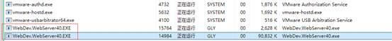
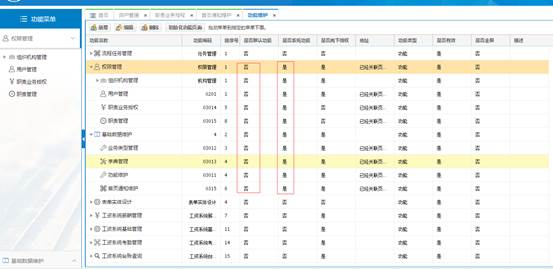
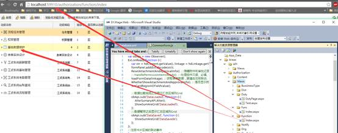
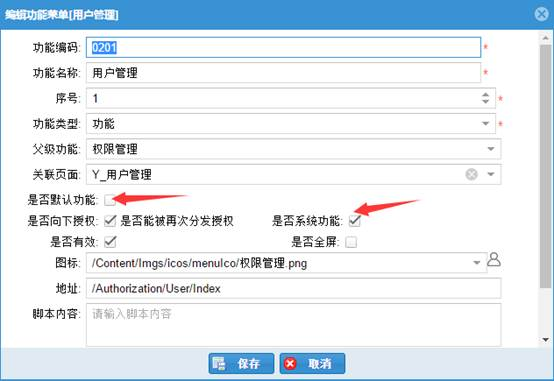
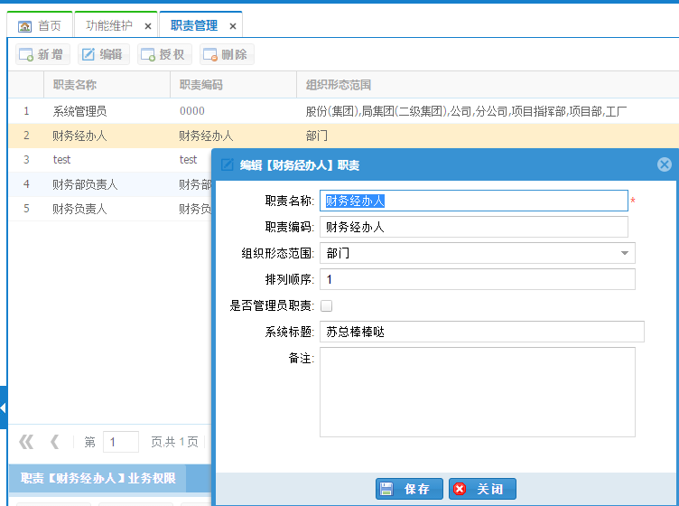
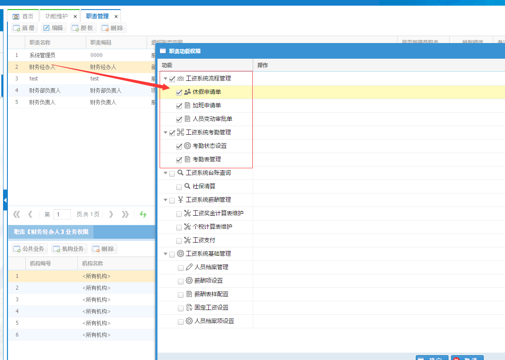
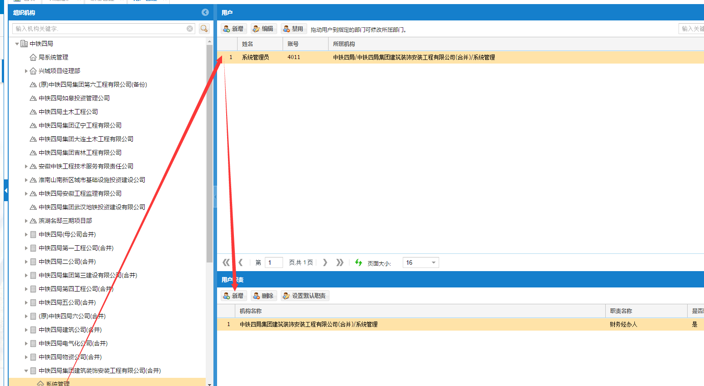
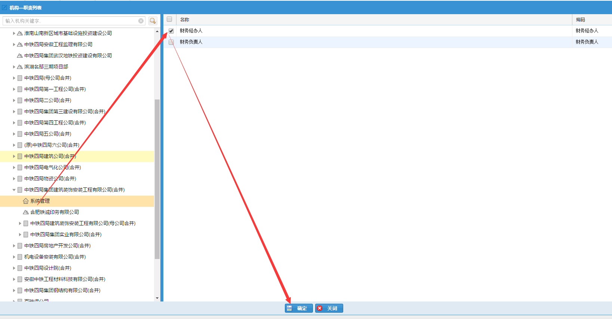
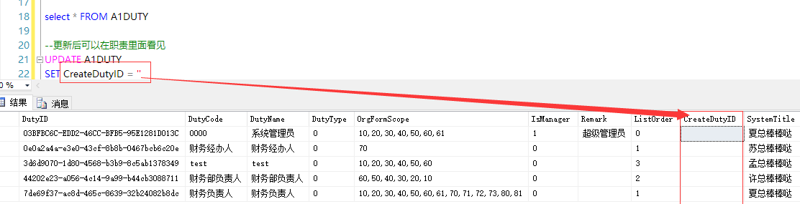
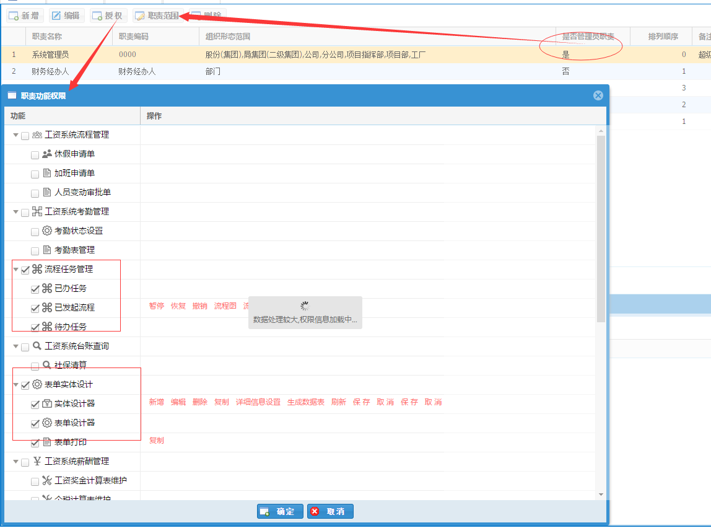

[toc]
## 1,界面配置及配置生效原则.

每次关闭相应进程(退出IIS不一定会退出这个进程), 刷新界面重新登录,
会刷新界面.(原理, 界面菜单的构建在调试时对应进程里面生成)
## 2, 管理员功能保证
- 保证admin菜单及相应功能,后面各用户授权,功能维护才能进行, 所以这是第一步.
### 解决问题
- 用admin登录后如果没有任何左侧菜单:
- 解决方案1: 浏览器地址栏输入后台**功能维护**对应地址去配置相应菜单功能(如下图1, 没有菜单怎么进入配置, 见图2)
- 解决方案2: 数据库表**批量** 更新.查询[语句1](语句1), 更新[语句2](语句2)
- 原理说明: ** “默认功能为否, 系统功能为是”**, 则管理员则加载其菜单功能. (此部分不全, 后续补充 4 见最后 2016-10-9)
 (这是管理员功能应该的设置配置)
(这是根据界面地址, 直接去配置)
### 后台批量更新语句
[语句1](语句1)
`SELECT TOP 100 * FROM A1Func A
WHERE A.FuncName IN ('权限管理','基础数据维护','组织机构管理','职责管理','机构维护','机构管理','机构关系类型'
,'机构关系','机构重组','用户管理','职责业务授权','基础数据维护','业务类型管理','字典管理','功能维护','首页通知维护') `
[语句2](语句2)
`UPDATEA1Func SET IsSysFunc = 1, IsAuthorize = 0
WHERE FuncName IN ('权限管理','基础数据维护','组织机构管理','职责管理','机构维护','机构管理','机构关系类型'
,'机构关系','机构重组','用户管理','职责业务授权','基础数据维护','业务类型管理','字典管理','功能维护','首页通知维护')`
## 3, 能看见菜单, 但是无法点开菜单. 即界面出发的url地址跳转原理.
## 问题分析, 菜单对应的功能地址url配置丢失, 系统功能, 更新后台语句去更新, :
### 如果点击菜单无反应, 即连接丢失, 修复语句, 涉及表: ** `A1Func` && `A1Page` **
`UPDATE A1Func SET Url =ISNULL((SELECT pageurl from A1Page where A1Func.PageID=A1Page.PageID),'') WHERE PageID>1`
## 4,
使用功能维护增加相应页面地址. 注意事项:
### 第一步: 因为: 是否系统功能:是, 是否默认功能: 否, 是给admin用来加载功能的.
所以, 自定义的基本配置为: 都应该为否. (有人说: 一直选中是否系统功能为是,
则不需要授权则可以加载, 当然要生效需要注意1 中的生效规则.)

### 第二步: 职责管理(职责业务授权): 功能菜单菜单授权分为业务权限和授权.
- 2个名字同一个意思, 有时候职责管理会配置相应测试地址, 历史原因, 不深究.
- 注意下半部分公共业务的范围较大. 加上后就不需要针对机构再加了, 没必要...
- 上半部分分编辑和授权
- 编辑需要设定范围, 和**[人员管理]**中, 人员所在的范围要关联, 否则,人员授权时无法看见职责.
(编辑范围)
(职责加功能)
举例说明: 4011是公司下-系统管理**部门**下的人员, 这个地方职责形态为部门, 人员为部门,
[人员管理] 中左侧机构树选部门, 然后增加这个职责. 这样 功能 -- 职责 - 人员, 就匹配上, 人就可以看见相应的菜单功能了.
### 第三步: 用户职责授权管理:
相应的用户赋权.
值得注意的地方就是职责对应的机构名称问题. 就是操作时左侧机构树选择人员对应所在公司,
如果选择其他, 会导致一定问题.(和成本系统里面是一样的).
(范围要选对)
(同举例,和职责范围对应)
## 4, 职责无法看见的问题 更新于2016-10-9
- 问题描述: 命名按照2中设置了系统管理员可以看的菜单之后, 为何还是无法看见菜单.
- 原因: 数据库中存储的`A1Duty` 表问题.
- 解决办法: 第一步: 更新语句:

第二步: 给管理员增加菜单权限:
